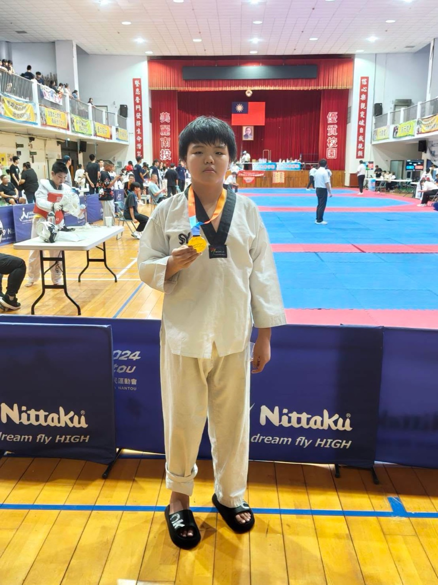

Nantou City Taekwondo Championship
男子色帶 C12 組 58–68 公斤級 冠軍

Hsinmin Elementary is bursting with pride! Congratulations to Hsu Cheng-fan (徐承範), a 5th grader from Class 501, who brought home the Gold Medal in the Men's Color Belt C12 division, 58–68 kg, at the Nantou City Taekwondo Championship!
On competition day, Cheng-fan stepped onto the mat with courage and gave everything he had. Every kick and every stance reflected months of dedicated training — and on that day, all that hard work shone through in the most golden way possible.
This achievement belongs not only to Cheng-fan, but also to Coach Hung Jung-chih (洪榮志教練), whose patient guidance, careful training, and steadfast support made this victory possible. Thank you, Coach Hung, for your dedication and care!
Cheng-fan, you inspire every student at Hsinmin to dream big, train hard, and never give up. We are so proud of you — this is just the beginning! 🏅
【新民之光・再傳捷報】
恭喜本校501徐承範同學參加「南投市全民運動會跆拳道錦標賽」，榮獲男子色帶C12組58–68公斤級金牌！
承範在賽場上全力以赴、勇敢迎戰，展現平日刻苦訓練的成果與堅強鬥志。
恭喜徐承範同學！
也感謝洪榮志教練的悉心指導與辛勤付出！
Words About Sports & Achievement英語學習角 · 和運動與成就有關的小單字
Six key words — tap 🔊 to listen, then try the conversation and quiz.
六個關鍵字，點 🔊 聽發音，再試試對話和小考。
情境：兩個同學聊起班上同學在跆拳道比賽中奪金牌的事。